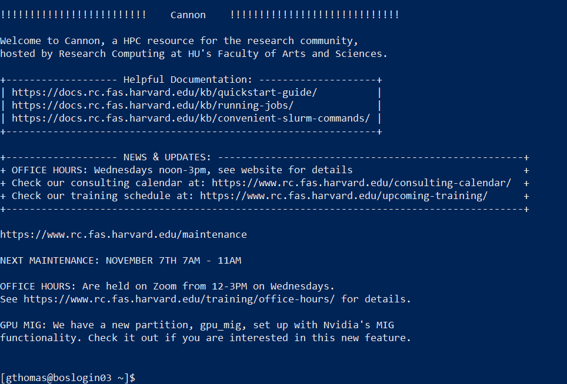

Hello! Today we'll be going through some hands-on activities to help you get familiar with how PhyloAcc is run and how it can be used to identify genomic elements that have experienced accelerated evolution.
This course will have 2 parts: one where we are on the server and running commands and another where we download some pre-run data to analyze with R.
Most of our work in the first part of the course will be done as bash commands typed in the Terminal. Throughout this walkthrough, commands will be presented as follows:
this is an example commandFollowing each command will be a table that goes through and explains each part of the command explicitly:
| Command line parameter | Description |
|---|---|
| this | An example command |
| is | An example option used in the example command |
| an | An example option used in the example command |
| example | An example option used in the example command |
| command | An example option used in the example command |
The goal of providing these tables is to break-down some of the 'black box' that command line tools can sometimes feel like. Hopefully this is helpful. If not, feel free to skip over these tables when you see them!
A general convention among command-line software is to provide a help menu for programs that lists common options. These can generally
viewed from the command line with the -h option as follows:
<program> -h -or- <program> <sub-program> -hFor Linux commands, documentation is generally available with the man command (man is short for manual):
man <command>man opens a text viewer that can be navigated with the arrow keys and exited simply by typing q.
If you're ever stuck or want to know more about a program's options, try these!
Here is some made up output.
Looking at your data is very important!
You can catch problems before you use the data in later analyses.If you want to follow along by running the commands, the first thing you should do if you haven't done so is to connect to Cannon, our cluster, such that you can run commands from a terminal. There are different ways to do this, but the easiest thing would to just open up Terminal (on Mac) or PowerShell (on Windows) and run the following command:
ssh [your user name]@login.rc.fas.harvard.eduThis should prompt you for your password and 2-factor authentication code, at which point you should see something like this:

In addition to logging on to the server as above, we're also going to start an interactive session on one of the compute nodes so that we don't bog down any of the login nodes trying to run PhyloAcc:
salloc -p test --mem 12g -c 8 -t 0-02:00| Command line parameter | Description |
|---|---|
| salloc | The job scheduling command to allocate an interactive session. |
| -p | The option to specify which partition we want our job to run on, in this case the test partition. |
| --mem 12g | The option to specify how much memory to allocate to our job, in this case the 12 gigabytes. |
| -t 0-02:00 | The option to specify how much time to allocate to our job, in this case the 2 hours. |
Once logged in, we'll install the PhyloAcc package with conda/mamba. First, we'll need to load conda with the Python module:
module load python| Command line parameter | Description |
|---|---|
| module | The cluster's module system that contains pre-installed software. |
| load | The module sub-command telling it we want to load a package. |
| python | The name of the package we want to load. |
Next, create an environment in which to install PhyloAcc
mamba create -n phyloacc-env| Command line parameter | Description |
|---|---|
| mamba | The mamba sofware management program. |
| create | The mamba command to create an environment. |
| -n phyloacc-env | The option to name the environment. You can give it any name you want. Here we chose 'phyloacc-env'. |
Next, activate the environment:
mamba activate phyloacc-env| Command line parameter | Description |
|---|---|
| mamba | The mamba sofware management program. |
| activate | The mamba command to activate an environment. |
| phyloacc-env | The name of the environment to activate. |
Now, let's install PhyloAcc itself:
mamba install bioconda::phyloacc| Command line parameter | Description |
|---|---|
| mamba | The mamba sofware management program. |
| install | The mamba command to install a package. |
| bioconda::phyloacc | The name of the package to install, with the bioconda channel specified. |
This may take a few minutes. Follow the prompts when presented. Then, when its done, let's make sure everything loaded correctly by running a check:
phyloacc --depcheck| Command line parameter | Description |
|---|---|
| phyloacc | The main interface for PhyloAcc. |
| --depcheck | An option that tells PhyloAcc to check dependency paths. |
When you do this, you should hopefully see something like this, with both binaries reporting PASSED statuses:
# --depcheck set: CHECKING DEPENDENCY PATHS AND EXITING.
PROGRAM PATH STATUS
-------------------------------------------
phyloacc PhyloAcc-ST PASSED
phyloacc-gt PhyloAcc-GT PASSED
# All dependencies PASSED.If you don't see this, or one or both of the checks failed, please let me know.
To keep things organized, let's make a new folder specifically for this workshop. First let's make sure you're in your home directory:
cd ~| Command line parameter | Description |
|---|---|
| cd | The Linux change directory |
| phyloacc-workshop | The path to the directory you want to change to. In this case, ~ is a shortcut meaning "your home directory". |
And this will create a folder in your home directory, but feel free to do it anywhere you like.
mkdir phyloacc-workshop| Command line parameter | Description |
|---|---|
| mkdir | The Linux create directory command |
| phyloacc-workshop | The name of the directory you want to create |
Finally let's enter our new directory so any files we create will be put in it:
cd phyloacc-workshop| Command line parameter | Description |
|---|---|
| cd | The Linux change directory |
| phyloacc-workshop | The path to the directory you want to change to. |
Now, let's move on to an intro to our data